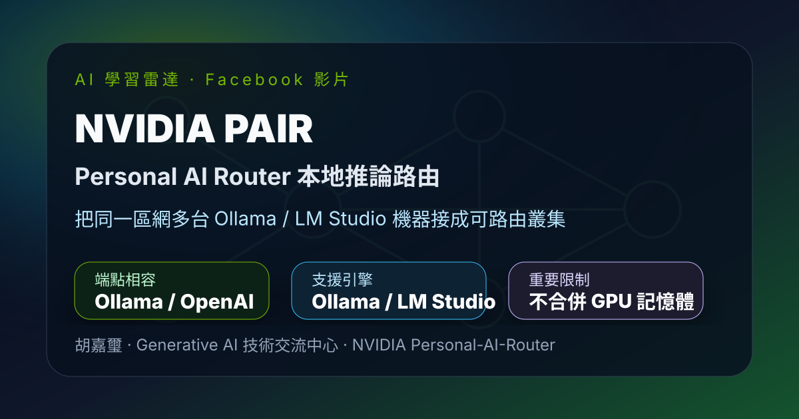
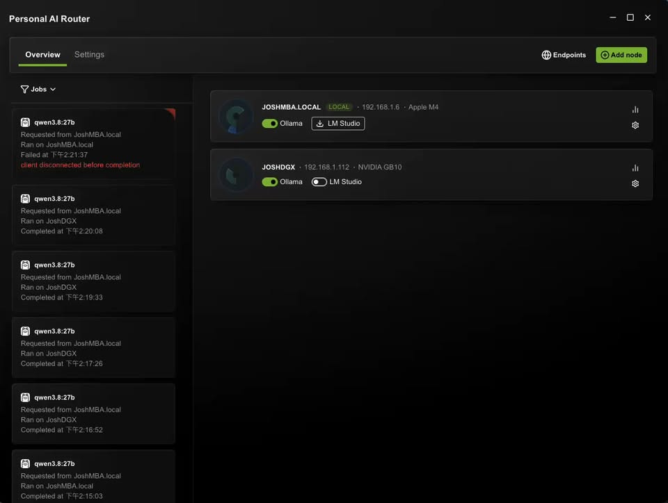
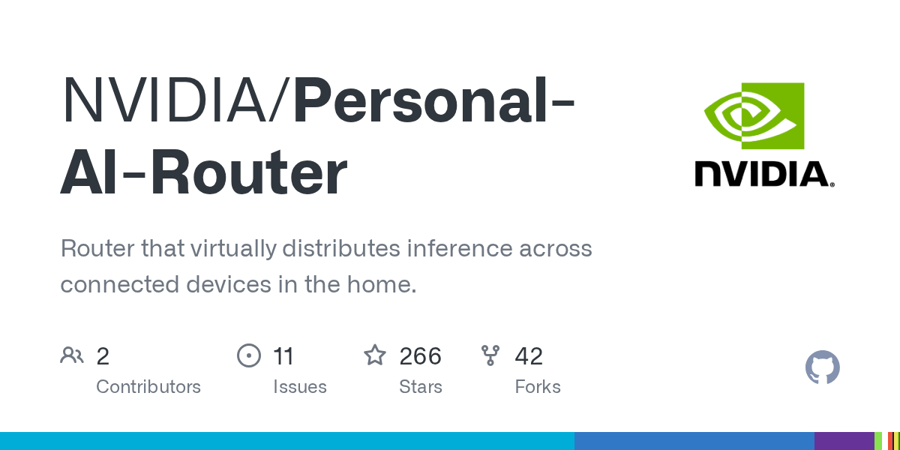

Facebook｜胡嘉璽：NVIDIA PAIR 把區域網多台 GPU 電腦變成本地 LLM 推論路由叢集

一句話摘要
胡嘉璽在 Facebook 社團分享 NVIDIA PAIR（Personal AI Router）實測：它能把同一區網內多台安裝 Ollama 或 LM Studio 的 Windows / macOS / Linux 機器配對成 local inference router，對外提供 Ollama / OpenAI 相容 proxy endpoint，並依模型、引擎與負載把「獨立請求」路由到合適節點。關鍵限制是：PAIR 不會合併 GPU 記憶體，也不會把單一模型或單一請求切到多台機器；它更像本地 AI 請求的 router / failover / 並行工作分流器。
來源脈絡
- Facebook 分享連結：https://www.facebook.com/share/v/1DqzoeHpvM/
- Canonical：https://www.facebook.com/groups/gaitech/posts/1774156477101893/
- 影片連結：https://www.facebook.com/61579313407097/videos/1605493064315080/
- 作者：胡嘉璽，發佈於「Generative AI 技術交流中心」社團
- NVIDIA 官方 Playbook：https://build.nvidia.com/playbooks/pair
- GitHub 專案：https://github.com/NVIDIA/Personal-AI-Router
貼文重點
- 作者實測 NVIDIA PAIR，可把同一區域網中的多台可跑 LLM 的電腦接成叢集。
- 支援 Windows、macOS、Linux；推論引擎目前以 Ollama 與 LM Studio 為主。
- PAIR 對外提供單一 endpoint，使用者可以像呼叫本機 Ollama / OpenAI-style API 一樣送出請求。
- PAIR 會依 engine availability、model availability 與 current workload，把獨立 request 路由到合適節點。
- 若某台 GPU 不能用，系統可轉往其他可用節點，實務上可作為 local inference 的 failover / 分流層。
- 貼文特別提醒：PAIR 不能把多張 GPU 相加成更大的記憶體池，也不能讓單一大模型跨機器載入。
官方文件補強
NVIDIA Playbook 將 PAIR 定義為 NVIDIA Personal AI Router：連接本地網路中的電腦，並向應用程式與 agent 暴露 Ollama-compatible 與 OpenAI-compatible proxy endpoints。它適合 multi-agent applications 這種同時產生多個獨立推論請求的工作負載。
官方 Playbook 的重要限制與需求：
- PAIR sends each request to one system。
- 不會 combine GPU memory、join GPUs into one larger GPU、split a model、或 split an in-flight inference request。
- 至少需要一台 compatible system 安裝 PAIR。
- 至少一台將服務 request 的系統需要 Ollama 或 LM Studio 與已下載模型。
- 配對多台系統時需在 trusted local network；六位數 PIN 是短效 setup code，不是長期憑證。
- PAIR accepts requests only from the local system，因此應安裝在 app / agent 執行的那台機器上；但該機器可以把請求路由到其他 cluster node。
支援範圍
- 作業系統：Windows 11、Linux、macOS。
- 架構：x64 與 arm64；Windows on ARM 仍屬 experimental。
- 安裝包：Windows .exe、Linux .deb、macOS .dmg；其他 Linux distributions 可自行 build from source。
- 節點混合：Windows、Linux、macOS 可互相 pair。
- 推論引擎：Ollama、LM Studio。
- 多節點硬體：DGX Spark、NVIDIA GeForce RTX 20 Series or newer、NVIDIA RTX PRO Turing or newer。
代表畫面

此圖為 Facebook 影片縮圖，保留作為原貼文視覺證據。影片長度約 31 秒，貼文主要示範 PAIR 節點與 endpoint 路由概念。

GitHub 專案描述：Router that virtually distributes inference across connected devices in the home。README 也明確指出 PAIR 適合 concurrent local workloads，例如 multi-agent applications。
為什麼值得收進 AI 學習雷達
- 這是 local AI 從「單機跑模型」走向「區網推論資源協調」的重要拼圖。
- 對 Hermes / Codex / Claude Code / multi-agent workflow 來說，PAIR 可降低多代理同時打本機模型時的排隊與單點故障問題。
- 對家中或工作室有多台 Mac、RTX PC、Linux box、DGX Spark 的使用者，PAIR 提供比手動切 endpoint 更乾淨的路由層。
- 關鍵限制寫得很清楚：它不是 vLLM / Tensor Parallel / 分散式大模型載入工具，而是 request-level router。
使用建議
- 先用兩台同區網機器測試：一台作為 app / agent 呼叫端，一台或多台作為模型服務節點。
- 確認每個節點都已安裝 Ollama 或 LM Studio，且要服務的模型已下載並可正常載入。
- 用 PAIR Playbook 的 curl 測試 endpoint，再觀察 Jobs 或節點狀態是否如預期分流。
- 混合硬體時不要期待智慧資源最佳化；README 提到目前 scheduling 仍較適合同質性接近的機器。
- 若在學校、公司、共享 Wi‑Fi 或不可信網路使用，務必先閱讀 SECURITY.md，確認 local HTTP endpoints、LAN discovery、PIN bootstrap 與 cluster networking 的風險。
原始貼文節錄
全網首發實測：用 NVIDIA PAIR 把區域網中的所有 GPU 合起來提供 LLM 服務。
貼文作者實測指出，NVIDIA PAIR 支援 Windows、macOS、Linux，目前支援 Ollama 和 LM Studio；只要電腦安裝其中一個推論引擎，就可以加入 PAIR 叢集。叢集會提供單一 endpoint，當某台電腦 GPU 不能用時，PAIR 會自動轉到另一台有 GPU 的電腦，形成類似 failover 的效果。
作者也提醒，PAIR 不是把 GPU 相加以放上更大的模型；它較適合家中或工作室有多台可跑 LLM 的機器、且都在同一區域網的情境。安裝後執行配對，看到 node 加入後，就能對代表機器 IP 的 endpoint 發 request，例如用 curl 存取 endpoint，觀察不同電腦被輪流存取。
原始連結
Facebook：
https://www.facebook.com/groups/gaitech/posts/1774156477101893/
NVIDIA Playbook：
https://build.nvidia.com/playbooks/pair
GitHub：
https://github.com/NVIDIA/Personal-AI-Router
Releases：